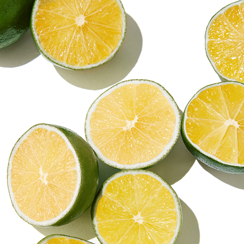
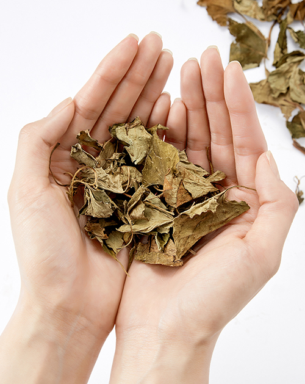
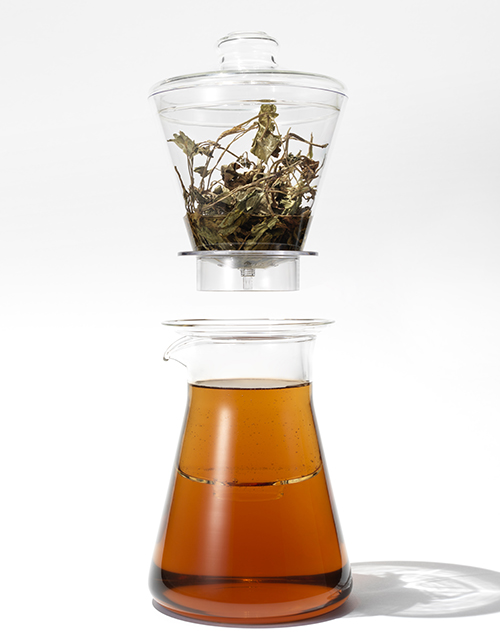
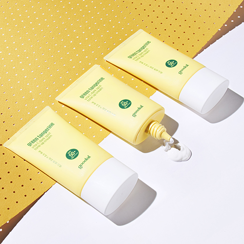
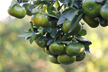
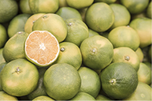
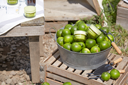

고기능 순한 자연주의 브랜드

‘구달’은 Good All Natural Remedy,
즉 자연의 힘으로 피부를 이롭게 한다는 슬로건을 가지고,
자연의 생명력과 에너지를 모던 테크놀로지로 이끌어내
투명하고 맑은 피부를 제공하는 브랜드 입니다.
Good+All = goodal
good(좋은)+all(모든)
이 두가지 단어에 구달이 추구하는
모든 가치가 담겨있습니다.
“좋은 모든 것, 모두에게 좋은 것”
피부에 좋은 자연의 원료를 찾고
모든 피부가 순하게 사용할 수 있는
최적의 배합을 찾아내는 것,
그것이 구달이 이제까지 해왔고,
앞으로도 변함없이 묵묵히 해나갈 사명입니다.


INGREDIENT
KOREAN NATURAL
한국의 친숙한 자연 원료
사계절이 뚜렷하여 고온다습한 여름과 추운 겨울이 있는 한국.
구달은 이렇게 다양한 환경 변화 속에서 자라난
한국의 자연원료를 제철에 수확해 담아냈습니다.

TECHNOLOGY
FRESH BREWING
프레쉬 브루 워터
자연의 에너지를 정직하게 끌어내는 모던 테크놀로지
구달은 원료를 끓이거나 가열하지 않고
깨끗한 저온의 찬물에서 천천히 우려내
자연의 좋은 성분을 고스란히 추출하는 공법으로
불순물은 걸러내고 액티브 성분만 싱싱하게 추출합니다.

REAL
SKIN BENEFIT
'기능' 이 느껴지는 고기능 자연주의
자연의 원료를 담은 자연주의 제품은 넘쳐나지만
피부 변화를 이끌어내는 기능적 제품은 찾기 힘듭니다.
구달은 한국의 자연 성분과 모던 테크놀로지를 결합해
순하면서도 피부의 변화가 느껴지는
고기능 자연주의를 지향합니다.
CONSUMER
CORE TARGET
도심 속 일상에서 자연을 즐기는 사람들
매일의 일상 속에서 자연을 만나는 구달의 사람들
굳이 녹음이 우거진 곳에 시간을 내어 찾아가지 않더라도
광활한 자연을 느낄 수 있는 먼 곳으로 여행을 가지 않더라도
도심 속에서 얼마든지 자연을 만끽하며 삶을 재충전합니다.



FRESH
GREEN TANGERINE
구달의 핵심원료, 자연유래 청귤추출물
1년 중 오로지 8-9월초 단 4주만 채취할 수 있는
초록빛의 싱그러운 어린귤 청귤은
피부에 생기와 활력을 선사해줍니다.
구달은 자연을 정성스럽게 담아
그 효능이 피부로 전달될 수 있도록 합니다.
서울특별시 성동구 왕십리로 66 (주)클리오 / 대표이사 : 한현옥
COPYRIGHTS(C) 2016 CLUBCLIO.CO.LTD. ALL RIGHTS RESERVED.
고객상담실 080-080-1510
상담안내시간 월~금 : 09:00~17:30
LUNCH 12:30 ~ 13:30 (토/일/공휴일 휴무)